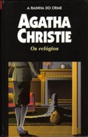

Os Relógios
The Clocks
Um homem desconhecido é encontrado morto na casa de uma senhora cega. Na cena do crime, quatro relógios parados na mesma hora: quatro e treze. Sem qualquer pista do assassino ou da identidade da vítima, o detetive Colin Lamb, do Serviço Secreto inglês, pede ajuda a Hercule Poirot. Ao iniciar a investigação, o detetive afirma que o caso é muito simples, mas ele logo percebe que a solução não é tão óbvia, principalmente quando outros dois assassinatos são cometidos em circunstâncias misteriosas.
Danielle Castro: Mais uma vez Poirot aparece com sua máxima sobre todos os crimes serem lógicos. Um crime cometido contra um homem desconhecido, apunhalado sem motivo aparente, na casa de uma idosa professora cega e com a descoberta do corpo por uma moça, uma datilógrafa nada fora do comum. As pistas parece não se encaixarem e, para desnortear ainda mais o leitor, quatro relógios na parede marcam as horas, porém, não pontualmente... Tal situação surpreendente e intrigante tira o sossego de um jovem detetive, que procura seu experiente colega de profissão Hercule Poirot para propor-lhe um desafio: desvendar todo o mistério sem precisar sair de sua confortável cadeira! Como era de se esperar, o detetive belga nada modesto e bastante entediado aceita de pronto a demanda. Porém, embora os sinais sejam controversos, um aviso é dado: um crime que pareça tão complexo só pode ser de solução bastante óbvia!